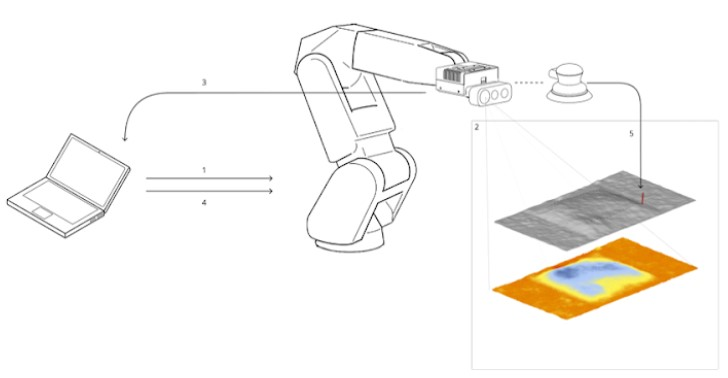
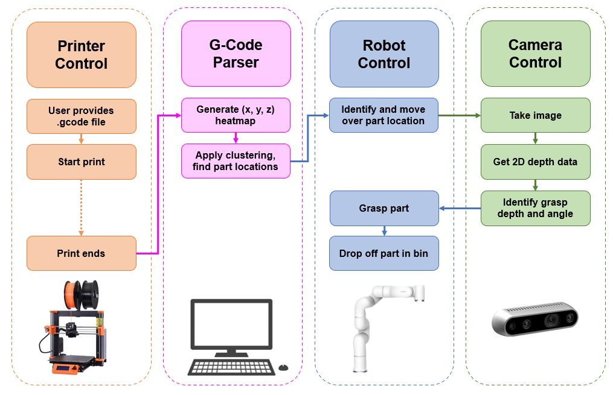
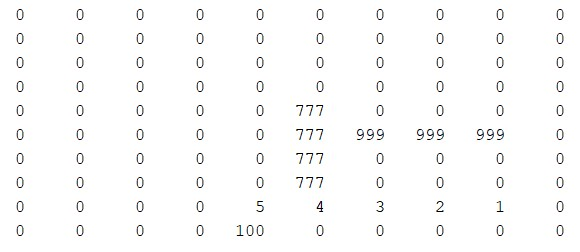

Offline programming is suitable for many robotic operations, but when real-time sensors are used, an in-the-loop system is needed.
Robot Operating System (ROS) is a complex set of packages that introduces complexity to developing robotic applications.
Considering these challenges, many systems use ROS to leverage inter-nodal communication and simulation, as well as ready-to-run packages, such as MoveIt!
For this project, our team was asked to move a photogrammetry procedure to ROS.
The current workflow is largely manual, with input needed multiple times from the operator.

We have so far been able to connect to and control the robot using ROS_industrial packages provided by ABB.
In the near future, we are going to connect the Microsoft Azure Kinect RGB-D camera using it's own ROS node, and work on automating the entire operation.
Additionally, our team is developing a TCP communication link between the Jetson taking images and the host PC operating the robot.
This communication allows for continous scene-building and live visualization during operation.
By Thanksgiving this year, we hope these upgrades will be finalized and ready to be presented in the 2022 Project Showcase in December.
Complex objects are inherently difficult to grasp. Given the constraignts of a parallel gripper, how should a robot pick up a part?
In CAIS lab, we are researching control systems for manufacturing.
The miniture smart manufacturing center we built consists of a Prusa i3 3D printer and uFactory xArm 6 degree of freedom robot arm.
Our current approach is to use a mix of (x,y,z) data parsed from the print's .gcode file and computer vision on an overhead image capture to inform grasp angle.
This approach is not perfect, and we are exploring more complex solutions.
Applying machine learning techniques to train a system on optimal grasps is possble, and is a current active area of research.
Using the Cornell labelled training dataset, it is possible to train a system without any additional data.
We are working on an automatically-generated dataset by leveraging robotic movement to create large training data image sets.
To do this, 10 3D-printed parts are placed in known positions (x,y,z,roll,pitch,yaw) and images are taken from a static overhead camera.
These images can be labeled automatically using the known position as a label for grasp parameters.

Look for an upcoming conference paper this November on this research.
What is the optimal path for a mobile robot to take to reach a target? What if there are obsticles?
After working for awhile at iRobot, I began to appreciate the complexity of the problem of mobile robot mobility.
For fun, I began programming a mobile robot simulation in MATLAB.
Diving the area into a 2-dimensional array, with a random initial position and target position,
the "robot" was able to navigate quickly using the minimum distance to target move.
The addition of obsticles for the robot to naviage around made the problem much more difficuly.
The direct path initially taken by the robot does not allow flexibility to execute moves that deviate from the best path.
To counter this, the robot needs more information than before. A knowledge of past moves and spaces already travelled to gives us the ability to retrace.
In addition, the ability to look ahead in time, simulating different paths and evaluating various options means the robot can determine paths around small obsticles.

My approach lead to a worse version of Dijkstra's algorithm, first researched in the 1950's.
Using graph theory, a computer science topic, is the approach I am interested in to determine minimum viable distance to a target node.
In the future, I hope to continue this work to evaulate different established 2D path planning algorithms, such as A* and Rapidly-exploring random trees (RRT).